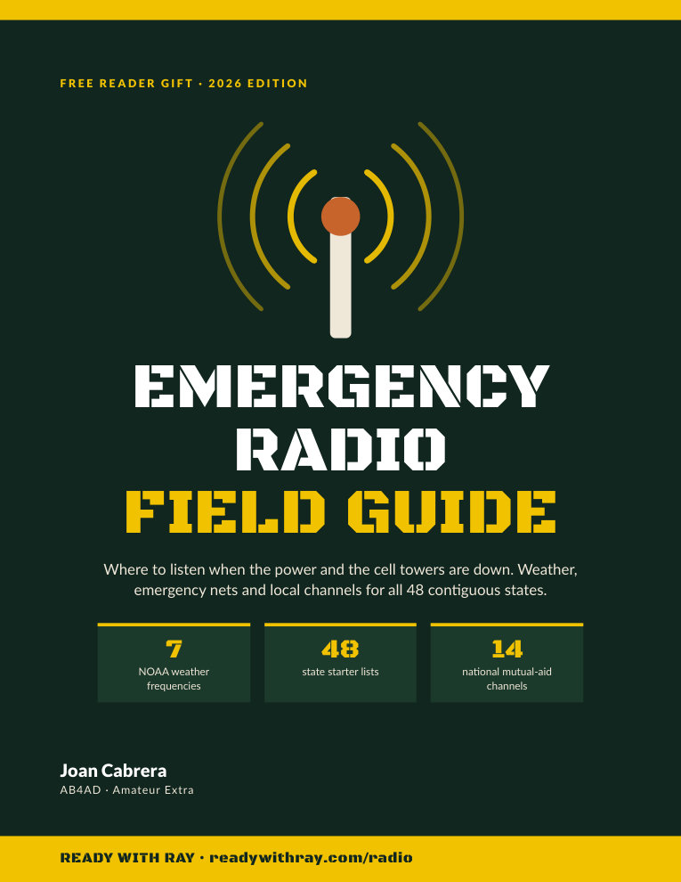

Where to listen when the power and the cell towers are down. NOAA weather, amateur emergency nets, SKYWARN repeaters and agency channels for all 48 contiguous states, with a source for every number.
15 pages · Letter size · prints fine in black and white · no sign-up, no email
If our book has been useful to you, we would be truly grateful for an honest review on Amazon. It takes a minute and helps other families find it. Just tap your book below. The guide is yours either way.
¿Leíste la edición en español? Una reseña honesta en Amazon nos ayuda muchísimo. ¡Gracias!

NOAA Weather Radio frequencies that work anywhere in the U.S.
State cards: your weather station, local emergency repeaters and statewide HF nets
National mutual-aid channels, plus hospital and EMS examples (listen only)
Fill-in plan page: your channels, check-in times and a go-bag radio checklist
¿Lectores en español? La guía está en inglés, pero las frecuencias son las mismas para todos. Descárgala con el botón amarillo de arriba.
By Joan Cabrera, AB4AD. On Amazon in Kindle and paperback.
Get on the air this week, the easy way. Radios you can use today, GMRS, and programming your radio from your phone.
★ Already read it? Leave a reviewHow it all works: bands, antennas, repeaters, emergency nets and your first station.
★ Already read it? Leave a reviewGet licensed on the 2026–2030 question pool.
★ Already read it? Leave a review